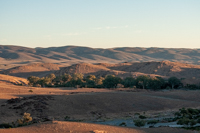
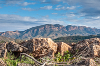
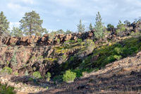

About
Research
Field Work
Publications
CV
SOUTH AUSTRALIA
SOUTH AUSTRALIA
(3 months)
In the summer of 2010, I joined
Jon Husson
and
Catherine Rose
in the Flinders Ranges of South Australia to assist them in their work studying the the Marinoan glaciation and the Wonoka anomaly.

Jon and Catherine starting on a morning traverse
The Pound Quartzite often forms spectacular cliffs in South Australia

The Nuccaleena Formation (the Marinoan cap carbonate) in front of the Pound Quartzite

The dolomitic Nuccaleena Formation capping the glacially derived Elatina Formation (Marinoan Snowball Earth)
Impressive stromatolites from the Trezona Formation
The Trezona Formation
Glacial erratics sitting in carbonate at the top of the Trezona formation
The rain comes to chase us away
Small scale faulting
Flute casts
The layers in this fine grain sandstone have been interpreted as tidal cycles
Glacial striations on Precambrian rocks caused by late Paleozoic ice sheets
-->
School of Earth and Ocean Sciences University of Victoria blakedyer at uvic.ca


{kind=link}
{kind=link}
{kind=link}
{kind=link}
{kind=link}
{kind=link}
{kind=link}
{kind=link}
{kind=link}
{kind=link}
{kind=link}
{kind=link}
{kind=link}
{kind=link}
{kind=link}
{kind=link}
{kind=link}
{kind=link}
{kind=link}
{kind=link}